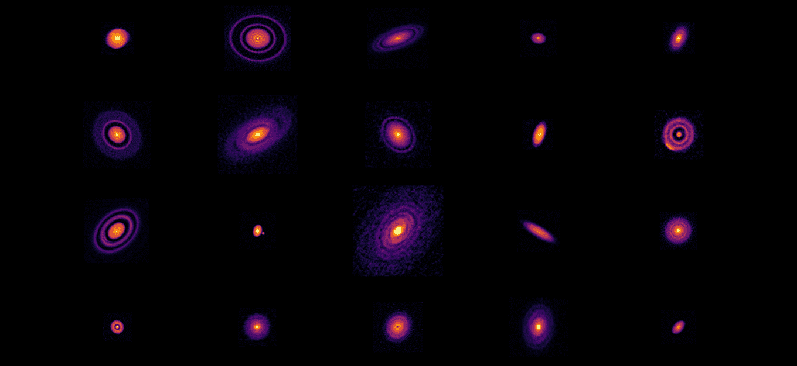
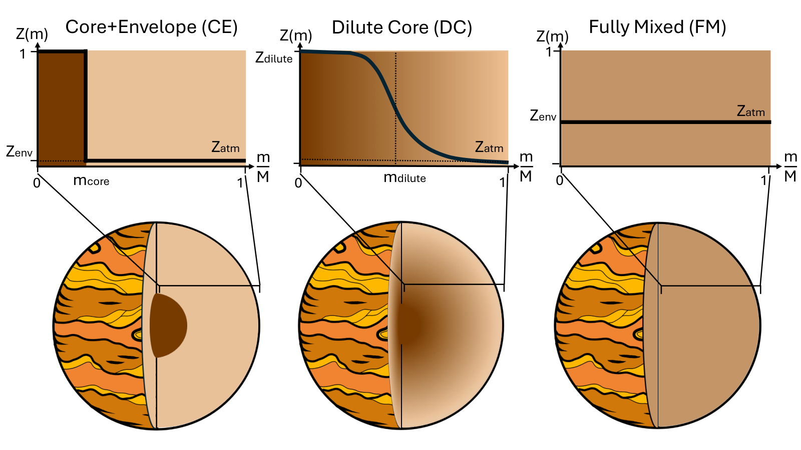

# Modelling planetary interiors <ul class="contents-list"> <li><a href="#/part-1"><strong>Part 1:</strong> The building blocks of planets</a></li> <li><a href="#/part-2"><strong>Part 2:</strong> Modelling interior structure</a></li> <li><a href="#/part-3"><strong>Part 3:</strong> Extra Resources</a></li> </ul> --- <h2 id="part-1" class="slide-part-title">Part 1: The building blocks of planets</h2> - <span class="fragment">Angular momentum conservation during star formation means discs form</span> - <span class="fragment">Dust falls to the midplane and can clump together, growing into protoplanets</span> <div style="text-align: center; width: 100%;"><p></p></div> -v- ## Planet formation - <span class="fragment">The **elemental abundances** of material in the disc should be **identical to the star**.</span> - <span class="fragment">We see similar elemental abundance ratios (Fe, Si, Mg, etc) across all terrestrial planets.</span> - <span class="fragment">Solid dust grains lack H, He, Ne, Ar, etc</span> - <span class="fragment">**Dust composition is modified with orbital distance** due to sublimation & condensation of volatiles at ice lines (H$_2$O, but also CO$_2$, CH$_4$, etc).</span> - <span class="fragment">Close-in material is only rocky (Fe, Mg, Si, O)</span> - <span class="fragment">Dust in distant regions is more volatile-dominated (C, N, S, O).</span> - <span class="fragment">This is clearly visible in the difference between e.g. Mars (Rocky), Ganymede (50% water), & comets (30% water, 30% rock, 40% volatiles/gases)</span> -v- ## Growth - <span class="fragment">Pebble-sized dust clumps together into **planetesimals** - gravitationally bound and not blown around by the gas ($>1$ km, 100kyr).</span> - <span class="fragment">Collisions between planetesimals and/or accretion of smaller material from the disc (pebbles) grows these into **protoplanets** ($>1000$km, $\sim1$Myr) and beyond.</span> - <span class="fragment">Protoplanets undergo **differentiation** which sorts planets by density.</span> - <span class="fragment">Typically: Core = free iron (and siderophile elements); mantle = magnesiums silicates; atmosphere = volatiles & H-He</span> - <span class="fragment">Once cooled, the atmosphere may further separate into ice/ocean layers under H-He (e.g. Ice Giants)</span> - <span class="fragment">Small ($\sim1M_\oplus$) planets can also accrete some gas ($<1\%$) from the gas disc producing a primordial atmosphere of H-He.</span> <span class="fragment"><div style="text-align: center; width: 100%;"><img src="https://upload.wikimedia.org/wikipedia/commons/1/12/MIT_12.007_Geobiology%2C_Spring_2007_-_Differentiation_of_Earth.jpg" style="height: 250px;" /></div></span> -v- ## Growth in the gas disc - <span class="fragment">Planets that grow massive enough ($\sim10M_oplus$) inevitably start to accrete nebular gas extremely efficiently - _runaway accretion_ of gas giants.</span> - <span class="fragment">After $\sim10$Myr, the gas disc is evaporated by stellar high-energy radiation, stopping any further accretion (either of gas or pebbles)</span> - <span class="fragment">Protoplanets can continue to grow via giant impacts (e.g. Earth's moon-forming impact)</span> -v- ## Migration - <span class="fragment">Planets peturb the disc around them, but as there is more dust outside this leads to a deceleration of the planet causing migration inwards.</span> - <span class="fragment">This can be rapid ($\ltapprox 1$Myr), especially for large ($1-20M_\oplus$) planets</span> - <span class="fragment">Giant planets ($>0.1M_J$) are large enough to open a gap in the disc, but torques with the gap edge still lead to (slower) inward migration</span> - Other planets can cause large influence on planetary position: - <span class="fragment">An exterior planet may halt migration (e.g Jupiter-Saturn)</span> - <span class="fragment">Gravitational interactions can also scatter planets in/out after the gas disc is stripped</span> -v- ## Mass loss - <span class="fragment">Planets can also lose material:</span> - <span class="fragment">Close-in planets can lose mass through evaporation of gaseous envelope (H/He)</span> - <span class="fragment">Collisions can also remove material, especially outer layers (e.g. Mercury's large core?)</span> -v- ## The fundamentals - There are four fundamental reservoirs: - <span class="fragment">Iron</span> - <span class="fragment">Silicates (sometimes considered with Iron for simplicity)</span> - <span class="fragment">Volatiles (dominated by water, especially for formation $<5$AU; sometimes assume equal parts ice:rock)</span> - <span class="fragment">Gas (H & He; can be assumed to be protosolar ratio, i.e. 27% He by mass)</span> - <span class="fragment">**Small planets** ($\lessapprox15M_\oplus$) are dominated by material from **dust**, and:</span> - <span class="fragment">Orbital distance of formation determines **volatile content**</span> - <span class="fragment">Stellar abundances determine iron/rock content (e.g. core-mass fraction, CMF)</span> - <span class="fragment">Large planets are dominated by **H-He gas**</span> --- <h2 id="part-2" class="slide-part-title">Part 2: Modelling interior structure</h2> ## Observations - <span class="fragment">Typically we have (if we are lucky) two direct measurements of the planet:</span> - <span class="fragment">Planetary mass (from e.g. RVs or TTVs)</span> - <span class="fragment">Planetary radius (from e.g. transits)</span> - <span class="fragment">(In addition, planetary orbit/temperature)</span> - <span class="fragment">These, combined with other assumptions, can give us useful information on what combinations of the four materials might be present</span> -v- ## Giant planet modelling - <span class="fragment">Given the mass is dominated by gas, the simplest assumption is to only model two materials: a gas envelope, and some fraction of rock/iron/volatiles</span> - <span class="fragment">Volatiles : rock+iron ratio (ice-to-rock) is assumed 1:1</span> - <span class="fragment">Need to assume something about the core-envelope boundary:</span> - <span class="fragment">Fully separated (with some small fraction of metals in the atmosphere $Z_{\rm atm}$)</span> - <span class="fragment">Fuzzy/dilute core, as suggested for Jupiter (Juno observations)</span> - <span class="fragment">Fully mixed</span> <span class="fragment"><div style="text-align: center; width: 100%;"><p></p></div></span> -v- ## Modelling Assumptions - Modelling is built on the following key differential equations: - <span class="fragment">**Conservation of mass**: $ \frac{\partial m}{\partial r} = 4\pi r^2 \rho $</span> - <span class="fragment">**Hydrostatic equilibrium**: $\frac{\partial P}{\partial r} = - \rho g $ - Gravity is balanced by pressure gradient.</span> - <span class="fragment">**Energy transport**: $\frac{\partial T}{\partial r} = \frac{\partial P}{\partial r} \frac{T}{P}\nabla_T$ - Hotter layers transport thermal energy to cooler layers</span> - <span class="fragment">**Energy conservation**: $\frac{\partial L}{\partial r} = 4\pi r^2 \rho(\dot{\epsilon} - T\frac{\partial S}{\partial t}) $ where L is the local intrinsic luminosity, and $\frac{\partial S}{\partial t}$ is the rate of change of specific entropy with time.</span> - The temperature gradient, $\nabla_T$, depends on the process that dominates the energy transport - adiabatic (simplest), or convective (which may also mix compositional gradients) - -v- ## Forward modelling interiors of small planets <!--- Hydrostatic equlibrium--> - <span class="fragment">We cannot typically take the observed density and compute expected composition</span> - Instead we need to take some combination of materials (e.g. 2Me iron, 3Me silicates, 4Me water, 0.1Me H-He) and ask _what radius would this planet have?_. - <span class="fragment">This approach requires multiple assumptions, physics, and experimental knowledge</span> -v- ### Layering - <span class="fragment">The first thing is to assume that the parts are layered by density</span> --- <h2 id="part-3" class="slide-part-title">Part 3: Extra Resources</h2> - [Fundamentals of interior modelling and challenges in the interpretation of observed rocky exoplanets](https://arxiv.org/pdf/2511.10269) -